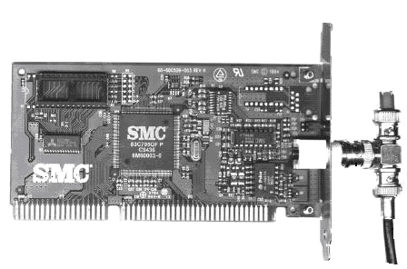
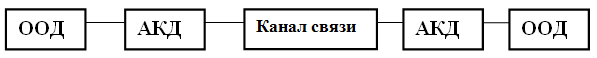
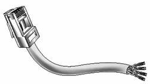
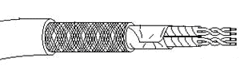
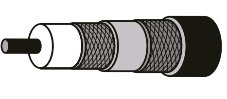
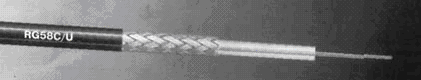
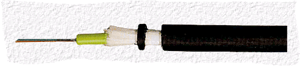

К аппаратным средствам компьютерных сетей относятся:
1. Компьютеры (IBM PC, Sun, Next, Macintosh и др.).
2. Сетевые адаптеры, адаптеры локальных радиосетей.
3. Соединительные средства:
3.1. Сетевые соединительные средства (коннекторы, трансиверы, репитеры, концентраторы, коммутаторы мультиплексоры, мосты);
3.2. Межсетевые соединительные средства (повторители, мосты, маршрутизаторы, брандмауэры, шлюзы, модемы).
4. Передающая среда:
4.1.Проводная передающая среда (коаксиальный кабель, витая пара, волоконно-оптический кабель).
4.2. беспроводная передающая среда (широкополосные сигналы, маломощное СВЧ-излучение, инфракрасные лучи).
5. Периферийное оборудование общего назначения (принтеры, плоттеры, сканеры и т.д.).
Сетевой адаптер (сетевая карта, карта сетевого интерфейса, Network Interface Card; NIC) реализует протоколы физического и канального уровней; может быть встроен в материнскую плату или является отдельным периферийным устройством. Сетевой карта (см. рис. 5.1) вставляются в свободное гнездо шины расширения материнской платы компьютера и подсоединяются с помощью разъема к кабелю сети (таких разъемов на плате адаптера может быть несколько).

Рис. 5.1. Сетевая карта с Т-коннектором.
На сервере может быть установлено несколько сетевых адаптеров. Сетевой адаптер работает под управлением драйвера этого адаптера, который играет роль посредника между адаптером и операционной системой (драйвер «знает» конкретные особенности устройства). Распределение функций между сетевым адаптером и драйвером может изменяться от реализации к реализации.
Сетевой адаптер обычно выполняет следующие функции:
Сетевые адаптеры различаются по типу и разрядности используемой в компьютере внутренней шины данных: ISA, EISA, PCI, PCNCIA, USB и др.
Сетевые адаптеры различаются также по типу используемой сетевой технологии (по типу протокола канального уровня): Ethernet, Token Ring, FDDI и т.п. В связи с тем, что для каждой технологии возможно использование различных сред передачи данных сетевой адаптер может поддерживать как одну, так и одновременно несколько сред: коаксиальный кабель, неэкранированную витую пару, оптоволоконный кабель (для этого имеются специальные разъемы).
Драйверы сетевых адаптеров инсталлируются отдельно при подключении сетевых адаптеров к компьютеру. Драйверы должны находиться на жестком диске компьютера или в ПЗУ. Изначально сетевые адаптеры поддерживали лишь один из протоколов определенного метода доступа (Ethernet, ArcNet, Token Ring), что создавало определенные проблемы (сервера в ряде случаев должны работать с несколькими протоколами). Для устранения этого недостатка были разработаны интерфейсы драйверов, позволяющие привязывать платы к различным протоколам. Существует два несовместимых интерфейса:
ODI (Open Drive Interface) — открытый сетевой интерфейс, разработанный фирмами Novel, Apple и другими крупными сетевыми фирмами.
NDIS (Network Driver Interface Specification) — спецификация интерфейсов сетевых драйверов компании Microsoft и 3COM.
Т-коннектор (T-connector) – небольшой тройник (см. рис. 5.1), который с одной стороны подключается к сетевому адаптеру, а с двух других сторон к нему присоединяются отрезки тонкого коаксиального кабеля с разъёмами на концах. Тип кабеля – 10 Base 2.
В-коннектор (BNC-connector) – цилиндрический соединитель для двух отрезков тонкого коаксиального кабеля.
RJ-45 – разъём для витой неэкранированной пары. (Кабель - 10 Base T). Его не следует путать с разъёмом для телефонной линии RJ-11.
Трансивер это интерфейсное устройство, обеспечивающее необходимые преобразования и приемопередачу сигнала между компьютером (устройством) и общей сетевой средой. Различают внутренние (встроенные в схему контроллера сетевой карты) и внешние трансиверы. В локальных сетях, основанных на технологии Ethernet, на долю которых приходится 85% мирового парка локальных сетей, внешние трансиверы применяются для подключения: толстого коаксиального кабеля 10Base 5, волоконно-оптического кабаля (оптический трансивер), а также для стыковки кабеля витая пара и волоконно-оптического кабеля.
Различают также КВ/УКВ трансиверы (радиостанции в широком смысле) и спутниковые трансиверы. Такие устройства являются многофункциональными.
Изначально трансиверы использовались для подключения рабочей станции к толстому коаксиальному кабелю (тип кабеля 10 Base5). На корпусе такого трансивера имеется 3 разъёма: два для подключения к толстому коаксиальному кабелю, один – для трансиверного кабеля. Трансиверный кабель, длиной до 50 метров, представляет собой многожильный экранированный кабель, соединяющий сетевой адаптер с трансивером. В нужных местах толстый коаксиальный кабель прокалываются вампирами, к которым подключается трансивер.
Повторитель (Repeater) — устройство, предназначенное для соединения сегментов сети. Повторитель копирует (пересылает) все пакеты из одного сегмента во все другие, подключенные к нему. Основной задачей повторителя является восстановление электрических сигналов для передачи их в другие сегменты.
Длина сегмента сети не должна превышать определенной величины. При нарушении этого условия можно использовать повторитель. Повторитель работает на физическом уровне модели OSI. Выполняется либо в виде карты, вставляемой в слот расширения материнской платы (в этом случае можно соединять только сегменты на тонком коаксиальном кабеле), либо в виде отдельного устройства со своим источником питания. Такой повторитель стоит дороже, но позволяет подключать сегменты на различных физических средах. Повторители используются также и как самое простое средство соединения однотипных локальных сетей. Такие повторители являются устройствами локального действия и обычно используются для соединений двух высокоскоростных локальных сетей, Удобны тем, что могут соединять различные типы физических средств передачи сигналов (коаксиальные, волоконно-оптические кабели и витые пары). Но повторители не могут транспортировать пакеты и кадры между сетями, имеющими различные форматы кадров и пакетов.
Концентраторы (Hubs) начали широко использоваться при переходе технологии Ethernet на витую пару в конце 80-х гг. прошлого столетия. В настоящее время концентраторы потеряли актуальность.
Различают пассивные и активные концентраторы.
Пассивный концентратор представляет собой устройство, к которому подключается несколько рабочих станций (обычно не больше трёх). Пассивный концентратор не обеспечивает усиление сигнала. Применяется на расстоянии не больше 30 метров. Такие концентраторы не пригодны в высокоскоростных сетях.
Активный концентратор имеет автономный источник питания и за счет усиления сигнала обеспечивает, надёжную работу на расстоянии до 600 метров. Количество подключаемых станций — 4, 8, 16 и т.д. При небольшом количестве каналов (3-4 канала) активный концентратор может быть выполнен в виде платы, вставляемой в сервер. Активный концентратор может функционировать как простой усилитель (при этом вместе с полезным сигналом усиливаются и шумы, что является существенным недостатком) или как генератор (повторитель сигналов). В последнем случае их называют многопортовыми повторителями. Кроме основной функции концентраторы могут выполнять и дополнительные функции, такие как, объединение сегментов с различными физическими средами, автосегментацию портов, поддержку резервных связей и т.д.
Посредствам концентраторов из отдельных физических сегментов образуется общая среда передачи данных, которая представляет собой логический сегмент (домен коллизий), такой, что при одновременной передаче данных любыми двумя компьютерами этого логического сегмента, даже принадлежащих разным физическим сегментам, возникает, коллизия, приводящая к блокировке передающей среды. Это один из существенных недостатков концентраторов, приведших к тому, что они потерями актуальность и в настоящее время не выпускаются.
Коммутаторы появились в конце 80-х годов. Вначале коммутаторы использовались исключительно для сегментации сети. В настоящее же время они широко применяются для непосредственного подключения к хостам и являются эффективным средством наращивания локальных сетей, позволяя устранить сетевую перегруженность.
Коммутатор (switch) в отличие от концентратора направляет поступивший пакет не ко всем узлам сети, а к конкретному узлу (по адресу получателя пакета).
Коммутаторы подразделяются на ряд категорий от простейших, предназначенных для сетей рабочих групп (внутренний трафик для сегмента и один мост для связи с другими сегментами сети) до коммутаторов масштаба предприятия, обеспечивающих диспетчеризацию трафика, поддержку большого количества логических соединений и трансляцию протоколов и т.д. Коммутаторы работают на 2 и 3 уровне модели OSI. Коммутаторы 3 уровня позволяют осуществлять маршрутизацию пакетов. Существуют также коммутаторы 7-го уровня (коммутаторы информации), которые работают на прикладном уровне с такими приложениями, как FTP, HTTP, Telnet и др. Коммутаторы информации позволяют разрешить ряд проблем, связанных с созданием и функционированием современных информационных систем, например, таких как Google.
Различают ненастраиваемые, настраиваемые, неуправляемые и управляемые коммутаторы.
Настраиваемые коммутаторы позволяют производить некоторые настройки (например, конфигурирование VLAN). Такие коммутаторы могут быть управляемыми и неуправляемыми. Пример неуправляемых, но настраиваемых коммутаторов - серия DES-12xx.
Неуправляемые коммутаторы не обеспечивают поддержку управления по протоколу SNMP. Неуправляемые коммутаторы могут быть настраиваемыми. К неуправляемым и ненастраиваемым коммутаторам относятся DES-1005, DES-1008 и др.
Управляемые коммутаторы поддерживают протоколы сетевого управления и могут управляться по сети с использованием специального программного обеспечения (D-Link DView, HP Openview). К ним относятся DES-32xx и выше.
Функционирование коммутатора основано на поддержке таблицы (табл. 5.1), которая связывает порты коммутатора с адресами подключенных к ним устройств. Таблица создается либо вручную администратором сети, либо автоматически в процессе обучения коммутатора. Используя таблицу адресов и содержащийся в пакете адрес получателя, коммутатор организует виртуальное соединение порта отправителя с портом получателя и передает пакет через это соединение. Виртуальное соединение между портами коммутатора сохраняется в течение передачи одного пакета, так что для каждого пакета виртуальное соединение организуется заново.
Таблица 5.1. Таблица коммутатора
|
MAC-адрес |
Номер порта |
A |
1 |
B |
2 |
C |
3 |
D |
4 |
E |
5 |
F |
6 |
G |
7 |
Различают следующие основные типы функциональной структуры коммутаторов:
С коммутационной матрицей.
С общей шиной.
С разделяемой многовходовой памятью.
Коммутаторы с коммутационной матрицей имеют ограниченное число портов (сложность реализации пропорциональна квадрату числа портов).
Коммутаторы с общей шиной используют высокоскоростную шину, связь портов осуществляется в режиме разделения времени.
В коммутаторах с разделяемой многовходовой памятью между входными и выходными портами используется управляемая разделяемая память.
В сложных коммутаторах обычно используется комбинация рассмотренных архитектур, что позволяет компенсировать их недостатки.
Различают прозрачные (transparent) и не прозрачные коммутаторы. Прозрачный коммутатор после завершения обучения (создания таблицы адресов) при появлении на его входе кадра с неизвестным адресом назначения повторяет этот кадр на всех портах. Достоинство таких коммутаторов в том, что их появление в сети совершенно не заметно для ее конечных узлов (это удобно при модернизации сети). Недостаток очевиден – возрастает трафик (засорение сети). Другой недостаток – возможность наличия в сети замкнутых петель (замкнутых маршрутов, сеть засоряется зацикливающимися пакетами).
Для устранения этого недостатка используется алгоритм покрывающего дерева (Spanning Tree Algorithm, STA). Алгоритм позволяет коммутаторам адаптивно строить дерево связей с помощью специальных тестовых кадров (при обучении). При обнаружении замкнутых контуров некоторые связи контура объявляются резервными. Коммутатор может использовать такую резервную связь только при отказе какой-либо основной. В результате сеть обладают некоторым запасом надежности.
Для построения сетей, в которых существует несколько параллельных путей (петель) используется протокол STP (Spanning Tree Protocol, IEEE 802.1D). Этот протокол используется не только в коммутаторах и мостах, но и в маршрутизаторах.
Непрозрачные коммутаторы, работающие по алгоритму маршрутизации от источника (source routing), передают кадры между сегментами на основе полной информации о межсегментном маршруте. Эту информацию записывает в кадр станция-источник кадра. При такой маршрутизации конечные узлы должны знать топологию сети, а сетевые адаптеры иметь программный компонент, реализующий выбор маршрута кадров.
Мосты, как и повторители, соединяет локальные сети или сегменты локальных сетей на аппаратном уровне, но, в отличие от повторителей, на более высоком уровне (на MAC-уровне).
Разница между мостом (bridge) и коммутатором состоит в том, что мост в каждый момент времени может осуществлять передачу кадров только между одной парой портов, в то время как коммутатор одновременно поддерживает потоки данных между всеми своими портами (если они не заняты). Так что, если мост передает кадры последовательно, то коммутатор параллельно. Мосты различаются многочисленными алгоритмами передачи и фильтрации пакетов. В этом плане они схожи с коммутаторами.
Мосты подразделяются на:
Внутренние, которые реализуется на сервере, связанном с двумя или более сетями.
Внешние в виде отдельные сетевые станции или устройства, реализующие функции моста.
Локальные, которые связывают локальные сети или сегменты посредством кабельной системы.
Удаленные, обеспечивающие связь посредством телефонной или другой линии.
Выделенные (станции, которые используются только как сетевые мосты).
Невыделенные (совмещают функции моста и рабочей станции).
В настоящее время локальные мосты практически вытеснены коммутаторами. Мосты используются в основном для связи локальных сетей с глобальными, как средство удаленного доступа, т.е. там, где нет необходимости в параллельной передаче данных.
Маршрутизаторы позволяют объединять сети с различными принципами организации в единую сеть. Коммерческое применение маршрутизаторов относится к 70 гг. прошлого столетия.
Маршрутизаторы подразделяются на три класса: верхнего, среднего и нижнего уровня. В качестве маршрутизатора нижнего уровня может использоваться рабочая станция или сервер, имеющий несколько сетевых интерфейсов и специальное программное обеспечение. Маршрутизатор верхнего класса является сложным специализированным и дорогостоящим устройством, объединяющим в отдельном корпусе множество маршрутных модулей.
Маршрутизаторы направляют пакеты или кадры в нужные межсетевые каналы с учетом адресов получателей. Маршрутизатор, в отличие от моста, является адресуемым элементом сети. Он выбирает только предназначенные ему кадры (пакеты) и направляет их в межсетевые каналы согласно адресам получателей. Маршрутизаторы используются как в глобальных, так и в локальных сетях. В локальных сетях маршрутизаторы взаимодействуют на подуровне управления логическими каналами (ПУЛК), а в глобальных сетях взаимодействие осуществляется на сетевом уровне.
Маршрутизаторы фильтруют и пересылают сетевой трафик на основе алгоритмов и правил, существенно отличающихся от тех, что используются мостами и коммутаторами. Маршрутизация предполагает два основных процесса: определение оптимального маршрута и транспортировку пакетов (коммутацию).
Если транспортировка пакетов относительно проста, то определение маршрута может представлять собой очень сложный процесс. Эта сложность обусловлена многочисленными и к тому же изменяющимися во времени параметрами, которые должен учитывать маршрутизатор при выборе оптимального маршрута. Для обеспечения процесса определения маршрута, алгоритмы маршрутизации инициализируют и поддерживают таблицы маршрутизации. В общем случае таблица маршрутизации содержит: действительные адреса устройств в сети, служебную информацию протокола маршрутизации, адреса ближайших маршрутизаторов.
Различают методы, алгоритмы и протоколы маршрутизации.
Методы маршрутизации можно подразделить на три группы: простая, статическая и адаптивная маршрутизация.
Простая маршрутизация характеризуется неизменностью алгоритма при изменении топологии или состояния сети. Ее разновидности:
Статическая маршрутизация осуществляется по заранее разработанной таблице маршрутов. Разновидности статической маршрутизации:
Адаптивная (динамическая) маршрутизация реализуется с учетом состояния сети (учитываются: топология сети, интенсивность потоков данных, задержки в узлах коммутации и т.д.). К разновидностям адаптивной маршрутизации относятся:
Процесс функционирования маршрутизатора основан на определенном алгоритме маршрутизации, который формирует вектор стоимостей путей доставки и, в качестве оптимального, выбирают путь с наименьшей стоимостью. Простейшие из алгоритмов определяют путь на основе наименьшего числа транзитных узлов. Более сложные алгоритмы в понятие «стоимость» закладывают несколько показателей (например, задержку передачи пакетов, пропускную способность каналов связи, или денежную стоимость связи). К алгоритмам маршрутизации предъявляются следующие требования: оптимальность выбора маршрута, простота реализации, устойчивость, быстрая сходимость, гибкость реализации.
Протоколы маршрутизации
1. Протокол RIP (Routing Information Protocol) — дистанционно-векторный протокол маршрутизации. Существуют две версии: RIPv1 (RFC 1058) и RIPv2 (RFC 2453). В RIPv2 реализована поддержка сетей переменной длины. RIP-маршрутизаторы используют UDP-транспорт, порт 520. Протокол RIP еще не потерял актуальность в Internet. В середине 1980 гг. самым популярным протоколом маршрутизации. RIP был повсеместно принят производителями персональных компьютеров.
2. EIGRP (Enhanced Interior Gateway Routing Protocol) — расширенный протокол шлюзовой маршрутизации. Протокол является обновленной в начале 1990-х гг. версией протокола IGRP (IGRP разработан в 1980 гг. компанией Cisco Systems). Ориентирован на обеспечение живучего протокола для маршрутизации в пределах автономной системы (AS).
3. OSPF (Open Shortest Path First, RFC 2328) — открытый протокол, базируется на алгоритме поиска наикратчайшего пути. Разработан для IP сетей рабочей группой IETF. Является наиболее распространенным во внутренних сетях TCP/IP.
4. EGP (Exterior Gateway Protocol, RFC 904, 1984 г.) — протокол внешних роутеров. Являясь первым протоколом внешних роутеров. EGP сыграл важную роль в Internet. Из-за этих присущих ему недостатков EGP заменяется другими внешними протоколами роутеров, такими, как BGP и IDRP
5. BGP (Border Gateway Protocol, RFC 1163 — версия 3; RFC 1771 — версия 4) является протоколом маршрутизации между AS. Создан для применения в Internet. BGP можно назвать следующим поколением EGP. BGP и другие протоколы маршрутизации между AS постепенно вытесняют EGP из Internet.
6. IDRP (IS-IS Inter-Domain Routing Protocol, ISO 10747) — протокол междоменной маршрутизации промежуточных систем. IDRP является протоколом OSI. Предназначен для обмена информации между доменами. IDRP базируется на протоколе BGP.
Брандмауэр по существу представляет собой систему, которая в целях безопасности накладывает ограничения на проходящий через нее поток данных. Брандмауэр позволяет разделить сеть на две или более частей и реализовать набор правил, определяющих условия прохождения пакетов из одной части в другую. Для каждого проходящего пакета брандмауэр принимает решение пропускать его или отбросить, опираясь на определенный набор правил. Как правило, эта граница проводится между локальной сетью предприятия и Internet, но может быть проведена и внутри локальной сети. Брандмауэры получили признание вначале 1990-х в связи развитием Internet.
Работа брандмауэра предполагает соблюдение следующих условий:
Брандмауэры подразделяются на следующие виды:
Наибольшее распространение получили брандмауэры с фильтрацией пакетов, реализованные на маршрутизаторах и сконфигурированные таким образом, чтобы фильтровать входящие и исходящие пакеты. Такие брандмауэры работают на сетевом уровне OSI.
Фильтры пакетов просматривают поля поступающих IP-пакетов, а затем пропускают или удаляют их в зависимости, например, от IP-адресов отправителя и получателя, номеров портов отправителя и получателя протоколов TCP или UDP и других параметров. Фильтр сравнивает полученную информацию со списком правил фильтрации для принятия решения о разрешении или запрещении передачи пакета.
Технология фильтрации пакетов является самым «дешевым» способом реализации брандмауэра. Такой брандмауэр может проверять пакеты различных протоколов, причем с большой скоростью, так как он анализирует на сетевом уровне модели OSI только заголовок пакета.
В настоящее время, несмотря на то, что фильтры пакетов получили широкое распространение они мало подходят для внешней защиты сети; но хорошо подходят для обеспечения безопасности внутри сети (с их помощью можно разбить сеть на защищенные сегменты).
К достоинствам брандмауэров с фильтрацией пакетов относятся:
Недостатки у данного типа брандмауэров следующие:
Шлюзы сеансового уровня представляет собой транслятор TCP соединения. Пользователь образует соединение с определенным портом на брандмауэре, после чего последний производит соединение с местом назначения по другую сторону от брандмауэра. Во время сеанса этот транслятор копирует байты в обоих направлениях. Такой тип брандмауэра позволяет создавать транслятор для любого определенного пользователем сервиса, базирующегося на TCP, осуществлять контроль доступа к этому сервису, сбор статистики по его использованию.
К достоинствам шлюзов сеансового уровня следует отнести их низкую стоимость, незначительное влияние на скорость маршрутизации, а также невидимость компьютеров локальной сети из вне. Основной недостаток — не способны осуществлять фильтрацию отдельных пакетов.
Брандмауэры прикладного уровня (шлюзы прикладного уровня или прокси-брандмауэры) используют сервера конкретных сервисов FTP, HTTP, SMTP и т.д., запускаемые на брандмауэре и пропускающие через себя весь трафик, относящийся к данному сервису. При этом между клиентом и сервером образуются два соединения: от клиента до брандмауэра и от брандмауэра до места назначения.
Преимущества брандмауэров прикладного уровня:
К недостаткам этого типа брандмауэров следует отнести: более высокая, чем для пакетных фильтров стоимость; невозможность использовании протоколов RPC и UDP; более низкую, чем для пакетных фильтров производительность.
Различают также SPI-брандмауэры (Statefull Packet Inspection — SPI) объединяющие в себе все рассмотренные выше разновидности брандмауэров. Это так называемые многоуровневые брандмауэры. SPI-брандмауэры обеспечивают наиболее надежную защиту сетей. Они применяются в современных маршрутизаторах. Большинство современных маршрутизаторов поддерживают протокол NAT (Network Address Translation), который базируются на сеансовом уровне.
Шлюз – межсетевой преобразователь, обеспечивающий соединение компьютерных сетей, имеющих различную архитектуру или протоколы. Так что под шлюзом в широком смысле понимают не только средства, обеспечивающие соединение сетей с различной архитектурой, например SNA и TCP/IP, но и средства, транслирующие различные протоколы канального и физического уровня. Трансляцию протоколов могут осуществлять мосты, коммутаторы, маршрутизаторы, программные и аппаратные шлюзы.
Мультиплексор – это устройство, которое обеспечивает эффективное использование среды передачи данных, пропускная способность которой значительно выше пропускной способности устройств, участвующих в коммутации.
Различают три основных вида мультиплексирования:
Частотное и временное мультиплексирование основано на частотном и временном разделении каналов. Сущность статистического мультиплексирования состоит в том, что мультиплексор в процессе работы учитывает активность устройств, участвующих в информационном обмене и может применять приоритеты для определенных устройств.
Мультиплексоры находят широкое применение в цифровых транспортных сетях (см п.1.5).
В транспортных сетях находят применение следующие виды мультиплексоров:
Схема типовой системы передачи данных (СПД) приведена на рис. 5.1.

Рис. 5.2. Схема типовой системы передачи данных, где:
ООД -- оконечное оборудование данных;
АКД -- аппаратура канала данных.
Международный термин ООД — Data Terminal Equipment (DTE). ООД (DTE) может представлять собой персональный компьютер, мэйнфрейм, терминал, кассовый аппарат и т.д.
Международный термин АКД — Data Communications Equipment (DCE). АКД (DCE), называемая также аппаратурой передачи данных (АПД), предназначена для передачи информации между двумя или большим числом ООД. АКД по существу и представляет собой модем в широком смысле слова.
В 60—70-х годах прошлого столетия модемы осуществляли только модуляцию/демодуляцию, так что в состав АКД входили и другие устройства, такие как устройства защиты от ошибок (УЗО), автоматические вызывные устройства (АВУ) и др., а сами модемы относились к устройствам преобразования сигналов (УПС). При этом дополнительно использовались стыки С3 и Сву. Современные модемы реализуют функции не только упомянутых выше устройств, но и ряд других сложных функций.
Под модемами в настоящее время понимают не только широко известные модемы для коммутируемых телефонных каналов, но также и такие устройства как сотовые модемы, пакетные радиомодемы, модемы ISDN, цифровые модемы.
Взаимодействие (стыковка) ООД и АКД осуществляется по одному из стандартных интерфейсов (стыков С2, в русской интерпретации), а подключение АКД к каналу связи (или среде распространения) по одному соответствующих стандартных интерфейсов (стыков С1). Стандартный интерфейс специфицирует входящие/исходящие цепи, разъемы и соединительные кабели.
Методы передачи данных можно классифицировать по следующим признакам:
По направленности передачи различают следующие режимы информационного обмена:
По способу группирования данных различают два основных метода передачи: асинхронный (старт-стопный) и синхронный.
Асинхронная передача зародилась в телеграфии, в конце 50-х гг. прошлого столетия. В начале 60-х годов получила распространение как способ передачи данных. При асинхронной передаче символы (байты) передаются поочередно. Каждый передаваемый байт обрамляется стартовым (для синхронизации) и одним или несколькими стоповыми битами.
Асинхронный режим передачи используется в основном в случае, когда передаваемые данные генерируются в случайные моменты времени, например пользователем. Асинхронный режим часто применяется при передаче данных по интерфейсу DTE-DCE. При этом модем может работать с компьютером в асинхронном режиме, а с удаленным модемом (по каналу связи) в синхронном и наоборот.
Передача данных по каналу связи в асинхронном режиме малоэффективна (используются простые методы модуляции, такие как амплитудная и частотная). Современные же методы модуляции (ОФМ, КАМ и др.) требуют применения синхронного метода передачи.
Асинхронный способ передачи используется в интерфейсе RS-232 (стыке С2). Для передачи символов по интерфейсу RS-232 наибольшее распространение получил следующий формат. Каждый старт-стопный символ содержит один стартовый бит, 7 бит us ASCII (например, латинская буква А имеет код 1000001), один бит паритета (проверка на четность) и два стоповых бита. Стартовый бит всегда имеет низкий уровень напряжения. Бит паритета устанавливается в "1" или "О" так, чтобы общее число единиц в 8-ми битной группе было нечетным или четным. Стоповые биты имеют высокий уровень напряжения. При передаче информации в расширенной кодировке ASCII используется формат, состоящий из одного стартового бита, восьми информационных и одного стопового бита. При этом бит паритета не используется.
Таким образом, для передачи 7 (8) информационных бит при асинхронном способе передачи необходимо 10 (11) бит (бит паритета может не использоваться).
Достоинство асинхронной передачи – простота (простые схемы формирования тактовых импульсов). Основной недостаток – большой объем избыточной информации, который может превышать 25%.
При синхронной передаче данные передаются кадрами достаточно большой длины (кадры Ethernet, Token Ring и др.). Такой кадр (см. рис. 5.3) содержит признак начала кадра (ПН), заголовок кадра (ЗАГ), данные, проверочные символы (ПС) и признак конца кадра (ПК).
ПН |
ЗАГ |
Данные |
ПС |
ПК |
Рис. 5.3. Состав кадра передачи данных.
Признаки начала и конца кадра должны обеспечивать возможность выделения границ кадров. Способ формирования этих комбинаций зависит от конкретного способа передачи, определяемого используемым протоколом.
Различают следующие подходы к формированию признаков границ:
Последний способ самый простой, однако он приводит к так называемой непрозрачной передаче, так как пользователь не может использовать некоторые последовательности двоичных символов (запрещено использовать ПН и ПК). Этот недостаток устраняется в знак-ориентированной прозрачной передаче и бит-ориентированной передаче.
При знак-ориентированной прозрачной передаче перед каждым из управляющих кодов ставится специальный знак АР1. Если встречается информационная комбинация совпадающая с АР1, то пред ней также вставляется АР1 (это так называемый байтстаффинг). Наличие двух подряд идущих АР1 говорит о том, что вторая АР1 — информационная комбинация.
При бит-ориентированной прозрачной передаче передача ведется кадрами переменной длины, при этом в качестве границ кадра используется фиксированная комбинация двоичных символов, называемая флагом. Если в поле кадров (между ПН и ПК) на передающей стороне встречается комбинация, совпадающая с флагом, то она преобразуется путем вставки символов таким образом, чтобы исключить подобную ситуацию. Такая процедура называется битстаффингом. Например, если в качестве флага используется комбинация 01111110, то упомянутое преобразование сводится к следующему. Последовательность между флагами просматривается и, если в ней встречается 5 единиц идущих подряд, то после них вставляется дополнительный (служебный) символ 0.
5.12.3.
Классификация модемов
К основным классификационным признакам модемов обычно относят:
По области применения различают:
Модемы для физических линий подразделяются на: модемы низкого уровня (линейные драйверы), использующие цифровые сигналы, и модемы "основной полосы". В последних используются методы модуляции, аналогичные применяемым в модемах для телефонных каналов. В качестве передающей среды могут использоваться: экранированная и неэкранированная витая пара, коаксиальный кабель и др.
Модемы для цифровых систем (ISDN и xDSL модемы) обеспечивают подключение к стандартным цифровым каналам, таким как Е1/Т1 и поддерживают функции соответствующих канальных интерфейсов.
Модемы для сотовых систем связи отличаются компактностью исполнения, поддержкой специальных протоколов модуляции и исправления ошибок, позволяющих эффективно передавать данные в условиях сотовых каналов с высоким уровнем помех и постоянно изменяющимися параметрами.
Кабельные модемы представляют собой широкополосные устройства, обеспечивающие высокоскоростной доступ к Internet по сети кабельного телевидения.
Пакетные радиомодемы предназначены для передачи данных по радиоканалу между мобильными пользователями. При этом несколько радиомодемов используют один и тот же радиоканал в режиме множественного доступа.
Модемы локальных радиосетей (адаптеры локальных радиосетей) – это специализированные радиомодемы. Такие модемы обеспечивают передачу данных на небольшие расстояния (до 300 м) со скоростью от 2 до 54 Мбит/с. Работают в определенном диапазоне частот с применением сигналов сложной формы.
По интеллектуальным возможностям различают модемы:
Большинство современных модемов поддерживает широкий спектр интеллектуальных возможностей. Стандартом де-факто является множество АТ-команд, разработанных фирмой Hayes, позволяющее управлять характеристиками модема и параметрами связи. Модемы, поддерживающие АТ-команды, называются Hayes-совместимых модемами.
Набор команд рекомендации ITU-T V. 25bis, позволяет управлять режимами установления соединения и автовызова. Специализированные модемы промышленного применения часто имеют фирменную систему команд, отличную от набора АТ-команд. Промышленные модемы часто поддерживают протокол сетевого управления SMNP, позволяющий администратору управлять сетевыми средствами (включая модемы) с удаленного терминала.
По конструктивным особенностям модемы различаются на:
Внешние модемы представляют собой автономные устройства, подключаемые к компьютеру или другому DTE посредством одного из стандартных интерфейсов DTE-DCE. Внутренний модем — это плата расширения, вставляемая в слот материнской платы компьютера.
Портативные модемы предназначены для использования мобильными пользователями совместно с компьютерами класса Notebook. Они отличаются малыми габаритами и высокой ценой. Их функциональные возможности, как правило, не уступают возможностям полнофункциональных модемов. Часто портативные модемы оснащены интерфейсом PCMCIA.
Групповые модемы представляют собой совокупность отдельных модемов, объединенных в общий блок. Они имеют общий блок питания, общие средства управления и отображения. Отдельный модем группового модема представляет собой плату с разъемом, устанавливаемую в блок, и рассчитан на один или небольшое число каналов.
Различают два типа кабеля "витая пара": неэкранированная витая пара (UTP – Unshielded Twisted Pair; рис. 5.4) и экранированная витая пара (STP – Shielded Twisted Pair; рис. 5.5).

Рис. 5.5. Неэкранированная витая пара.
Существуют 7 категорий витой пары: Категории 1, 2 (разъем RJ–11) относится к телефонному кабелю; категории 3-5, 6, 7 применимы в компьютерных сетях (коннектор RJ–45). Чем выше номер категории, тем более высокую скорость передачи поддерживает кабель. Категории 3, 4 из-за низкого качества в настоящее время не применяются. Используемый в компьютерных сетях кабель "витая пара" состоит из 4-х покрытых оболочкой скрученных медных проводов (синий/синий-белый, оранжевый/ оранжевый-белый, зеленый/зеленый-белый, коричневый/корич-невый-белый).
UTP благодаря низкой стоимости, гибкости и простоте инсталляции является в настоящее время наиболее популярной передающей средой для офисных локальных сетей. Становление технологии Gigabit Ethernet (GE; скорость передачи 1000 Мбит/с) привело к появлению "витой пары" UTP Категорий 5e и 6. Категория 6 имеет полосу пропускания до 250 МГц, что в 2,5 раза больше, чем у Категории 5. Категория 7 (до 600 МГц) относится к STP (в STP 7 каждая пара индивидуально защищена). Основным недостатком UTP является низкая помехозащищенность, поскольку такой кабель подвержен сильному влиянию электромагнитных помех.

Рис. 5.6. Экранированная витая пара.
Витая пара STP отличается от UTP тем, она более дорогая, более жесткая, экранирована и должна заземляться. Витая пара STP применяется при высоком уровне радиопомех.
Коаксиальный кабель похож на телевизионный кабель. В течение примерно 10 лет с момента появления технологии Ethernet он был единственным типом кабеля, который применялся для создания локальных сетей. После появления витой пары в новых инсталляциях коаксиальный кабель практически не применяется.
В локальных сетях использовались 2 типа коаксиального кабеля: кабель спецификации 10BASE-5 – толстый коаксиальный кабель (диаметр медного провода – 2,17 мм; рис. 5.7), и кабель 10BASE-2 – тонкий коаксиальный кабель (диаметр провода – 0,89 мм; рис. 5.8).

Рис. 5.7. Толстый коаксиальный кабель
Спецификации 10BASE-5 удовлетворяет 50-омный RG8 и RG11 (магистральный кабель); в СНГ это кабели РК – 50 – 6 – 11 и РК – 50 – 6 – 13;

Рис. 5.8. Тонкий коаксиальный кабель
Спецификации 10BASE-2 удовлетворяет семейство 50-омных кабелей RG-58; в СНГ РК–50-3-11.
Волоконно-оптический кабель (рис. 5.9) передает не электрические, а световые сигналы. Кабель может содержать одно светопроводящее волокно, но обычно их несколько (от 4 до 216). Волоконно-оптический кабель компактнее и легче медного, диаметр одного волокна примерно соответствует человеческому волосу. Различают многомодовые (ступенчатые и градиентные) и одномодовые волокна.

Рис. 5.9. Волоконно-оптический кабель.
В многомодовом волокне для передачи применяется светодиод, с помощью которого невозможно получить однородный сигнал и точно направить его внутрь светопроводящей жилы. Поэтому при передаче светового сигнала, он, многократно отражаясь от стенок оптоволокна, трансформируется в серию мод (лучей), которые, проходя различные расстояния, попадают в точку приема не одновременно, что порождает так называемую межмодовую дисперсию. При этом, чем больше длина оптоволокна, тем меньше полоса пропускания оптоволокна.
Посредством сложного легирования оптоволокна можно добиться плавного уменьшения показателя преломления от центра к оболочке волокна (так получают градиентное волокно) и тем самым, уменьшая межмодовую дисперсию, расширить полосу пропускания волокна до 100-1000 МГц/км. Диаметр многомодового волокна составляет 50-65 мк , диаметр оболочки — 125 мк.
В одномодовом волокне для передачи сигнала используется лазер. Лазер использует одну длину волны, поэтому на дальность передачи сигнала влияет только величина затухания. Диаметр одномодового проводника составляет 8,3 микрона, а оболочки – 125 мк. Количество мод зависит и от диаметра волокна. Если диаметр волокна сравним с используемой длиной волны, то по волокну будет распространяться только одна мода и действовать будут уже законы не геометрической, а волновой оптики.
Оптоволоконную технологию отличают следующие достоинства:
Для организации беспроводной связи используют следующие виды сигналов:
1. Широкополосные радиосигналы в до СВЧ-диапазоне (до 1 ГГц). В такой среде можно передавать данные в свободном пространстве с направленной антенной до 30 км; со всенаправленной антенной – до 200 – 250 м.
2 Маломощное СВЧ-излучение. Скорость передачи от 0,64 до 54 Мб/с.
3. Инфракрасное излучение. Приемопередатчики могут находиться на расстоянии друг от друга до 25 м, но для достижения максимальной скорости должны беспрепятственно видеть друг друга (инфракрасные лучи не проходят даже простые перегородки).
Беспроводные системы работают в следующих диапазонах частот:
902 – 928 МГц,
2,4 – 2,5 ГГц,
3.2 – 3,6 ГГц,
5,15 – 5,25 ГГц
7,725 – 7,85 ГГц.
С 1998 г. диапазон 2,4–2,4835 в республике Беларусь выделен для использования в беспроводных источниках связи.